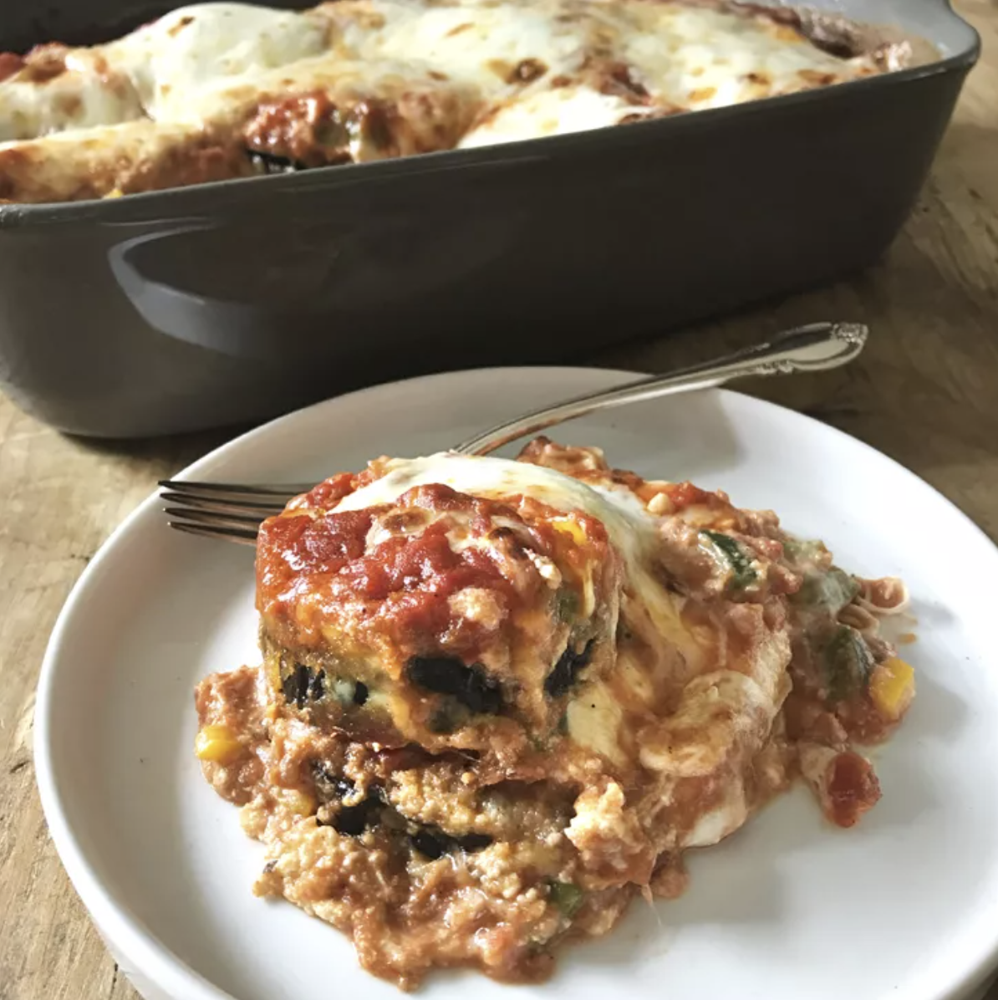

Meatless Eggplant Lasagna

Description
Hey you, vegetarian lasagna lovers, we got you covered!
All the taste of a classic lasagna, just with eggplant instead of beef mince. Perfect for parties (or just a party for one!). Delicious!
Ingredients
- cooking spray
- 2 large eggs, lightly beaten
- 1 tablespoon water
- 2 cups panko bread crumbs
- ¼ cup grated Parmigiano-Reggiano cheese
- 2 eggplants, peeled and sliced into 1/2-inch rounds
- 1 (16 ounce) container ricotta cheese
- ½ cup chopped fresh basil
- 1 large egg, lightly beaten
- ¼ cup grated Parmigiano-Reggiano cheese
- 1 ½ teaspoons minced garlic
- ½ teaspoon crushed red pepper
- ¼ teaspoon salt
- 1 (24 ounce) jar marinara sauce
- 1 yellow bell pepper, diced
- 1 green bell pepper, diced
- ¼ teaspoon salt
- 8 ounces thinly sliced mozzarella cheese
- ¾ cup finely grated Fontina cheese
Steps
- Preheat the oven to 375 degrees F (190 degrees C). Coat 2 baking sheets and a 9x13-inch baking dish with cooking spray.
- Stir together 2 eggs and water in a shallow dish. Combine panko and Parmigiano-Reggiano cheese in a second shallow dish. Dip eggplant slices in egg mixture and dredge in panko mixture, pressing gently to adhere and shaking off excess. Place on prepared baking sheets.
- Bake in the preheated oven until golden, turning once and rotating baking sheets after 15 minutes, about 30 minutes total.
- Combine ricotta cheese, basil, 1 egg, Parmigiano-Reggiano, garlic, red pepper, and salt in a bowl to make filling.
- Spoon 1/2 cup marinara sauce into the prepared baking dish. Layer 1/2 the eggplant slices over sauce and sprinkle with 1/8 teaspoon salt. Top with 3/4 cup marinara sauce. Spread 1/2 the ricotta mixture on top; add 1/2 the yellow and green bell peppers and top with 1/3 the mozzarella cheese and 1/4 the Fontina cheese. Repeat layers, ending with 1 cup marinara sauce. Cover tightly with aluminum foil coated with cooking spray.
- Bake in the preheated oven for 35 minutes.
- Remove aluminum foil; top with remaining mozzarella cheese and Fontina cheese. Continue baking until sauce is bubbly and cheese melts, about 10 minutes more. Cool 10 minutes before serving.
Back to Homepage